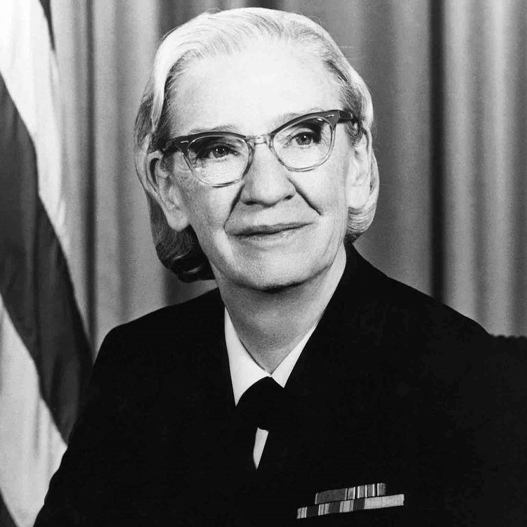
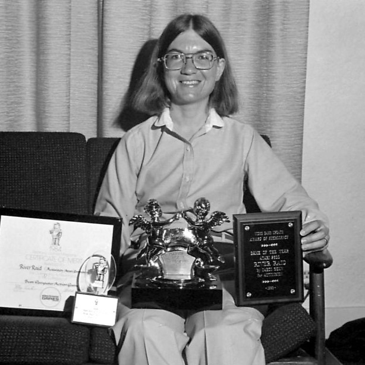
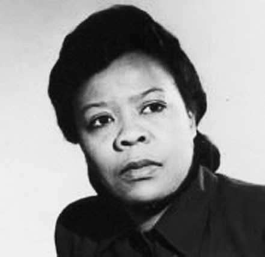
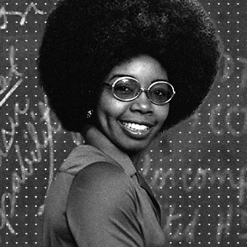
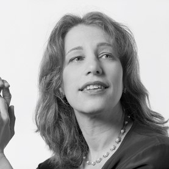

'ELA É.
Olá! , hoje nós iremos conhecer um pouco sobre mulheres que se tornaram
icones no mundo da tecnologia atraves das suas ideias.
A história das mulheres na tecnologia é repleta de pioneiras que
desafiaram estereótipos e abriram portas para que outras pudessem seguir seus sonhos.
Há várias mulheres que ganharam destaque ao longo da história da tecnologia, seja na
criação de um algoritmo, uma linguagem ou de um game clássico! Ter referências é
algo muito importante para servir de inspiração ao longo da nossa carreira.
Por isso, eu convido VOCÊ a vir comigo e conhecer um pouco mais da história e desse mundo repleto
de mulheres inteligêntes, corajosas, donas de suas decisões e sonhos.
Quer saber mais ? arrasta pra cima!
' MULHER ! , ICONES ! , PROGRAMMERS! QUE MUDARAM O MUNDO COM A TECNOLOGIA.
MULHER,
As mulheres tiveram um papel importantissímo
no desenvolvimento de inovações, programas e jogos.
A importância das mulheres na tecnologia está no fato de que,
com mulheres, é possível ampliar a visão na criação de produtos
e serviços tecnológicos. Além disso, a inclusão de mulheres na
tecnologia ajuda a promover a igualdade de gênero e a combater
a discriminação.
No setor de tecnologia, a igualdade de gênero é um desafio.
No entanto, isso não significa que não existam mulheres na
tecnologia que tenham marcado o setor e contribuído com suas criações.
A presença feminina na tecnologia é essencial para impulsionar a inovação
e garantir que todas as vozes sejam ouvidas na construção do futuro digital.
" LUGAR DE MULHER É ONDE ELA QUISER. "
01

MULHER, ADA LOVELACE'
A MÃE DA COMPUTAÇÃO.
A Condesa Ada Lovelace foi a primeira programadora mulher do mundo,
responsavel por criar o primeiro algoritmo a ser rodado por um computador.
Ada traçou uma estratégia de como a máquina poderia ser usada para cálculos dos números de Bernoulli,
sequência de números matemáticos racionais ligada à teoria dos números.
De acordo com material publicado na Universidade de Yale, nos Estados Unidos, esse método é considerado
o primeiro programa de computador do mundo.
Em 1979 o Departamento de Defesa dos EUA desenvolveu uma linguagem de programação e a batizou com
o nome de “Ada”, em homenagem à Ada Lovelace. Ada é considerada a mãe da programação e
responsável por parte relevante do progresso científico e tecnológico conhecido como a computação moderna.
Em 1842, Charles Babbage foi convidado a ministrar um seminário na Universidade de Turim sobre sua máquina analítica.
Luigi Menabrea, um jovem engenheiro italiano e futuro Primeiro-ministro da Itália, publicou a palestra de Babbage em
francês e esta transcrição foi posteriormente publicada na Bibliothèque Universelle de Genève, em 1842. Babbage pediu
a Lovelace para traduzir o artigo de Menabrea para o inglês, adicionando depois a tradução com a anotações que
ela mesma havia feito. Lovelace levou grande parte do ano nesta tarefa.
MULHER, HEDY LAMARR'
A MÃE DO WIFI.
A Hedy Lamarr foi uma atriz austríaca, a primeira mulher a criar/inventar o wifi.
Ela transcendeu seu estrelato em Hollywood para se tornar uma inventora. Em 1941
apresentou o "Sistema secreto de comunicação" que é o que conhecemos hoje como wi-fi.
Este sistema de comunicações foi baseado nas 88 teclas de um piano e foi capaz de evitar ouvir o inimigo.
Hedy, uma grande mulher, uma grande atriz linda e uma grande inventora na tecnologia.
Nascida em Viena 1914 e passou de reconhecida como a "mulher mais bonita da história
do cinema" para a precursora da tecnologia usada hoje em comunicações sem fio de celulares, GPS e Wi-Fi.
A vida dela sempre esteve ligada ao cinema desde que ela abandonou seus estudos de engenharia.
Como atriz, ela fez história em 1932 com o filme Ecstasy, tornando-se a primeira vez que uma
mulher apareceu completamente nua durante um orgasmo. Durante seu casamento, ela retomou sua
carreira de engenharia e em todas as reuniões que participou com seu marido ela coletou
informações sobre as características da mais recente tecnologia de armas nazistas.
Farta de sua vida de casada, Hedy Lamarr fugiu para os Estados Unidos, onde estrelou vários filmes.
Mas não só ela era atriz, como se tornou a criadora do Wi-Fi alguns anos depois, em pleno Da Segunda Guerra Mundial.
02
03
 MULHER, GRACE HOPPER'
A PROGRAMADORA DO COBOL.
A Grace foi uma programadora, ajudou a desenvolver um compilador
que foi um precursor da linguagem COBOL amplamente utilizada e
tornou-se um contra-almirante na Marinha dos EUA.
1 de janeiro de 1992 Grace Hopper tornou-se a primeira mulher a
obter um ph.D. em matemática pela Universidade de Yale em 1934.
Em 1952, Grace Hopper e sua equipe criaram o primeiro compilador para linguagens de computador.
Grace Hopper tornou-se a primeira mulher a receber a Medalha Nacional de Tecnologia em 1991.
Quando se aposentou da Marinha dos EUA em 1986, aos 79 anos, Grace Hopper era a oficial mais velha do serviço.
O USS Hopper, um navio naval que foi encomendado em 1997, foi nomeado em honra de Grace Hopper.
Grace Hopper entrou para a Marinha dos EUA durante a Segunda Guerra Mundial e
foi designada para programar o computador Mark I. Ela continuou a trabalhar na
computação após a guerra, liderando a equipe que criou o primeiro compilador
de linguagem de computador, o que levou à popular linguagem COBOL. Ela retomou o
serviço naval ativo aos 60 anos, tornando-se contra-almirante antes de se aposentar em 1986.
MULHER, CAROL SHAW'
A PROGRAMADORA DE JOGOS.
A Carol Shaw foi uma engenheira computacional estadunidense, notória
por ser a primeira mulher desenvolvedora de jogos eletrônicos no mundo.
Nascida na Califórnia (Estados Unidos) em 1955, Shaw sempre esteve na
região do Vale do Silício e, naturalmente, foi influenciada pela revolução
tecnológica que ali aconteceu. Seu interesse pelos videogames começou cedo,
quando a jovem Carol costumava frequentar o minigolfe de sua região,
onde havia uma sala com jogos de arcades.
Formada em Ciências da Computação pela universidade de Berkeley, Carol
foi contratada pela Atari em 1978. Neste mesmo ano, a jovem nascida no
seio do Vale do Silício, em Palo Alto, Califórnia, se tornou a primeira
programadora de um game. No caso, era um simples jogo da velha chamado 3D
Tic-Tac-Toe, mas foi um passo importantíssimo para abrir as portas para
outras mulheres entrarem na indústria de desenvolvimento.
Quatro anos depois, Carol Shaw, já como funcionária da pela Activision, se
tornaria programadora do inesquecível River Raid, seu game de maior sucesso.
No inicio dos anos 90, Carol se aposentou, antes mesmo de chegar à terceira
idade, graças ao imenso sucesso de River Raid. Desde então, Carol Shaw passou
a realizar trabalhos voluntários em organizações relacionadas à tecnologia.
04
05
MULHER, RADIA PERLMAN'
A MÃE DA INTERNET.
A Radia Joy Perlman (Portsmouth, 1 de janeiro de 1951) é uma cientista
da computação estadunidense, projetista de software e engenheira de redes.
É algumas vezes referenciada como a “mãe da Internet” por sua invenção do
protocolo Spanning Tree (STP), que é fundamental para a operação de pontes
de rede mais conhecida por bridge (redes de computadores), enquanto
trabalhava para a Digital Equipment Corporation.
Ela também fez grandes contribuições para muitas outras áreas de design e
padronização de redes, como os protocolos de roteamento link-state.
Mais recentemente, ela inventou o protocolo TRILL para corrigir algumas
das deficiências das spanning trees. Atualmente, ela é funcionária da Dell EMC.
Ela ficou famosa por sua invenção do Protocolo Spanning Tree (STP), que é
fundamental para a operação de pontes de rede, enquanto trabalhava para a Digital
Equipment Corporation. Perlman é autora de um livro sobre redes e coautora de
outro sobre segurança de rede. Ela detém mais de 100 patentes.
Ela foi bolsista na Sun Microsystems e ministrou cursos na Universidade de Washington,
na Universidade de Harvard e no MIT, e foi palestrante em eventos em todo o mundo.
Perlman recebeu prêmios como o Lifetime Achievement Awards da Usenix e o Association
for Computing Machinery's Special Interest Group on Data Communication (SIGCOMM).
MULHER, MARIE VAN BRITTAN BROWN'
CRIADORA DO 1º SISTEMA DE SEGURANÇA DOMÉSTICO.
A Marie Brown, foi uma enfermeira negra norte-americana,
reconhecida pela criação do primeiro sistema de segurança residencial.
Em 1960, ela e o marido Albert Brown (eletricista) tinham uma rotina bastante
puxada por conta do trabalho e sempre chegavam tarde em casa, isso acabou gerando
um receio pela insegurança no bairro onde morava em Nova York e a demora da polícia
em responder ao chamado das vítimas, isso motivou a marie e o marido a criar o seu
proprio sistema de segurança doméstico, tornando-os mais seguros em sua residencia.
O sistema de segurança consistia em câmeras que possibilitam a identificação de
desconhecidos, uma espécie de quatro olhos mágicos: uma câmera deslizante, monitores
de televisão e microfones bidirecionais. Esses equipamentos funcionavam como um sistema
de circuito fechado de televisão para vigilância, conhecido também pela sigla de CFTV.
A partir desse sistema, o morador poderia capturar imagens de pessoas em diferentes
alturas e ainda se comunicar com quem estava fora da casa. E por meio de um controle
remoto, tornou-se possível destrancar a porta a uma distância mais segura e acionar
um botão de emergência, que enviaria um alarme para a polícia ou segurança.
Como resultado desse invento, em 1969, Marie e seu marido receberam uma patente (nº 3.482.037)
e sua invenção foi reconhecida pelo The New York Times e também um prêmio do Comitê Nacional de Cientista.
Em 1999, aos 76 anos, Marie faleceu. Mas seu legado não parou de crescer e contribuir para a evolução do setor.
A invenção da nova-iorquina chegou a ser citada em 32 pedidos de patente subsequentes.
Sua invenção refere-se a um sistema ainda relevante na sociedade, presente em bancos, empresas, escritórios e
condomínios.
06
07
 MULHER, VALERIE THOMAS'
A CRIADORA DO 1º APARELHO TRANSMISSOR DE ILUSÃO ÓPTICA.
A Valerie Thomas, foi uma cientista e inventora afro-americana nascida na década de 1940.
Ela inventou o transmissor de ilusão, um dispositivo que utiliza princípios ópticos
para criar imagens tridimensionais.
Em 1980, recebeu uma patente e foi responsável pelo desenvolvimento dos sistemas de processamento
de imagem em formatos de mídia digital usados nos primeiros anos do programa Landsat.
Seu trabalho revolucionário na NASA, onde trabalhou por mais de três décadas,
contribuiu para o desenvolvimento de tecnologias avançadas de visualização e comunicação.
Inclusive, os filmes 3D que conhecemos hoje foram beneficiados pela pesquisa da cientista.
O trabalho de Valerie influenciou a compreensão das tecnologias de visualização tridimensional como aquelas usadas em telas cinematográficas.
MULHER, CHIEKO ASAKAWA'
A PROGRAMADORA CEGA QUE DESENVOLVEU O HOME PAGE READER.
A Chieko Asakawa (浅川 智恵子) é uma cientista de computação japonesa cega,
conhecida pelo seu trabalho em acessibilidade na IBM Research - Tokyo.
Em 1997, ela criou um dos primeiros leitores de tela para facilitar a
navegação na internet para pessoas com deficiência visual.
Ela desenvolveu um plug-in para o navegador Netscape, o IBM Home Page Reader,
que se tornou o sistema web-to-speech mais amplamente utilizado.
Chieko Asakawa nasceu com visão normal, mas após ferir o nervo óptico aos 11 anos,
ela começou a perder a visão e, aos 14 anos, estava completamente cega.
Ela se formou em Literatura Inglesa na Universidade Otemon Gakuin em Osaka e,
posteriormente, ingressou na IBM Research.
Seus projetos de pesquisa incluem um processador de texto para documentos em braille,
uma biblioteca digital para documentos em braille e um mecanismo de navegação na web
mais conveniente para pessoas cegas. Além disso, ela trabalhou no desenvolvimento de
tecnologia para tornar o mundo físico mais acessível para pessoas cegas.
Chieko Asakawa recebeu vários prêmios e honras, incluindo o Hall of Fame of Women in
Technology International em 2003 e o título de IBM Fellow, a maior honra da IBM para
seus funcionários. Ela é uma pioneira na área de acessibilidade e continua a impactar
positivamente a vida de muitas pessoas através de suas contribuições significativas.
08

09
 MULHER, SUSAN KARE'
A PIONEIRA DA PIXEL ART.
A Susan Kare é uma norte-americana, designer gráfica visionária, tipógrafa, ilustradora e pintora.
Especialista em Pixel Art, ela se tornou uma referência após a criação da interface gráfica e aos
ícones do sistema operacional do Apple Macintosh, Macintosh o 1º Mac OS, originalmente lançado em 1984.
Além disso, ela deixou sua marca no design de fontes e ícones para a Microsoft.
Quando você usa seu computador, coloca emojis em mensagens ou move arquivos para a lixeira, está interagindo com o legado da designer Susan Kare.
O seu trabalho estabeleceu as bases da linguagem visual que permite aos usuários interagir com dispositivos
clicando em imagens. A Susan Kare foi uma pioneira da pixel art e ficou famosa como a “mulher que deu um sorriso ao Macintosh”,
uma referência ao icônico ícone de smile que iniciava o sistema operacional desses computadores.
Em 1980, Kare foi recrutada pela Apple, lá como membro da equipe de design do Macintosh, ela desempenhou um papel fundamental
na criação da interface gráfica e das fontes do sistema operacional, sendo posteriormente promovida a Diretora de Criação na Apple.
Susan Kare deixou uma marca indelével no mundo do design gráfico e continua a influenciar designers e profissionais até hoje